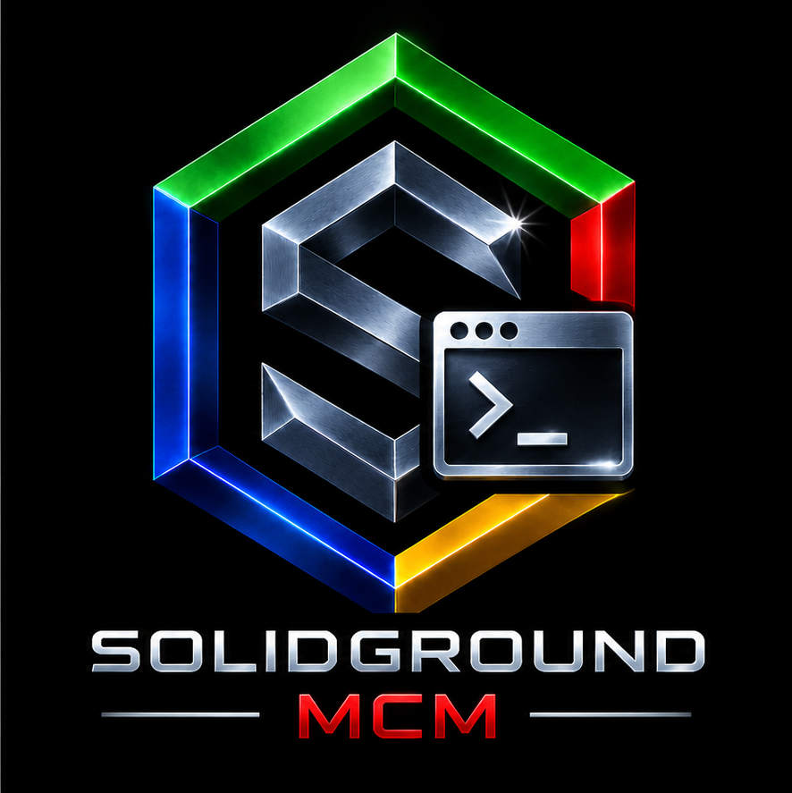

|
 |
SolidGroundUX: Management Console Modules Version 2.1.2626414 · © 2026 Testadura |
|
Documentation Product reference and guides |
Changelog Releases and development history |
License Terms of use and redistribution |
About SolidGroundUX Management Console Modules
The SolidGroundUX Management Console Modules provide system-management functionality for the SolidGroundUX Management Console.
These modules were originally distributed as part of the standard SolidGroundUX release. They are now maintained as a separate project so that management functionality can evolve independently from the SolidGroundUX framework itself.
SolidGroundUX provides the framework, runtime and shared utilities. This project owns the Management Console host, its public sgnd-console command, the console modules, and the management-specific executables that use the Framework.
Architecture
Management Console modules are primarily presentation and orchestration components.
A console module may:
- register menu groups and menu items;
- determine availability and display status;
- provide lightweight read-only status or validation functions;
- orchestrate other registered actions;
- dispatch work to framework or management executables.
Persistent or reusable system-changing functionality should normally be implemented in a separate executable rather than directly inside a console module.
Conceptually:
Management Console
│
▼
Console module
menu registration
presentation
status / orchestration
│
▼
Management executable
│
▼
System changesExecutables created specifically to implement management functionality belong to this project. Generic SolidGroundUX utilities remain part of the SolidGroundUX framework project, even when a Management Console module provides a menu entry for them.
For example, the Development module may expose framework utilities such as workspace creation, deployment or release preparation without taking ownership of those utilities.
Framework integration
Management Console Modules depends on the SolidGroundUX Framework runtime and public APIs. Framework testing is split deliberately by ownership:
- The Framework provides the public
sgnd-smoketestcommand for framework installation validation and interactive framework smoke tests. - The Management Console Modules Framework Test page calls
sgnd-smoketestfor framework-owned suites. - Console registration validation remains owned by Management Console Modules because module discovery, registration and handler validation are console-application concerns.
- Module validation remains owned by Management Console Modules and uses the canonical validator contract below.
The former Management Console-owned framework-smoketest.sh implementation and sgnd-framework-smoketest public command are no longer part of this product.
Module validation contract
Every console module exposes a validator named:
validate_module_<module-id-with-hyphens-replaced-by-underscores>The validator may print detailed diagnostics and sets:
SGND_MODULE_VALIDATION_MESSAGE=<concise summary>It returns one of the standard validation states:
0 Passed
1 Failed
2 Warning
3 Skipped / not applicableApplicability is decided by the module itself. A missing canonical validator is a module-contract error rather than a skipped validation.
DRYRUN contract
All persistent actions exposed through the Management Console must respect the SolidGroundUX DRYRUN contract.
When DRYRUN is active, an action may inspect the system and report what it would do, but it must not make persistent changes. This includes changes to:
- files and directories;
- system or application configuration;
- SolidGroundUX configuration or state;
- services;
- users and groups;
- repositories;
- remote systems.
Console modules must propagate DRYRUN to delegated executables. A delegated action must not silently escape DRYRUN semantics.
DRYRUN output should describe intended actions using Would ... while the preview is running, with enough detail to identify the relevant target, value, file, service, user, repository, or remote system where practical. A mutating action should finish its DRYRUN path with an explicit retrospective confirmation, for example: DRYRUN complete. The changes shown above would have been applied; no changes were written.
Menu presentation
Modules and management executables that present menus should follow the standard SolidGroundUX console layout.
Menu sections should use sgnd_print_sectionheader rather than ad-hoc Option: ... headings or separators. The menu should have the standard separator above the option section and an empty line after the final menu option.
This keeps submenus visually consistent with the rest of the SolidGroundUX Management Console.
Project layout
Console modules are installed below the SolidGroundUX console-module directory:
target-root/
└── usr/
└── local/
├── lib/
│ └── solidgroundux/
│ └── common/
│ └── active-directory-management.sh
└── libexec/
└── solidgroundux/
├── console-modules/
│ ├── 10-computer-setup.sh
│ ├── 15-storage.sh
│ ├── 20-active-directory-server.sh
│ ├── 25-active-directory-client.sh
│ ├── 27-active-directory-management.sh
│ ├── 30-samba-file-server.sh
│ ├── 40-solidgroundux.sh
│ ├── 45-solidground-framework-test.sh
│ ├── 50-web-server.sh
│ ├── 60-sqlserver.sh
│ ├── 70-docker-server.sh
│ └── 90-development.sh
├── manage-active-directory-client.sh
├── manage-active-directory-server.sh
├── manage-active-directory.sh
├── manage-docker-containers.sh
├── manage-docker-server.sh
├── manage-samba-file-server.sh
├── manage-samba-shares.sh
├── manage-solidgroundux.sh
├── manage-sqlserver.sh
├── manage-storage.sh
├── manage-web-server.sh
├── publish-web-content.sh
└── set-identity.shManagement-specific executables may live alongside the SolidGroundUX executable tooling outside the console-modules directory. They remain part of this project when their primary purpose is to implement functionality owned by a Management Console module.
Convenience templates
Canonical convenience templates are owned by the product that defines them and are installed below usr/local/share/solidgroundux/convenience-templates.
The SolidGroundUX Framework supplies the generic executable, library, documentation and wrapper templates. Management Console Modules supplies the console-module template because the module contract belongs to this product.
create-workspace discovers the installed convenience templates and lets the developer select which ones to copy into a new workspace. The copied templates become workspace-local starter/reference copies and may then be used to instantiate project starter scripts.
Development principle
The boundary for this project is intentionally simple:
**Console modules register and present functionality; executables
implement functionality.**
Small presentation-only and read-only helpers may remain inside a module where extracting them provides no practical benefit. Persistent system-changing operations should live behind the module boundary in an appropriate executable.
This separation keeps the Management Console modules small, makes management actions independently testable, and provides a consistent place to enforce framework conventions such as DRYRUN.